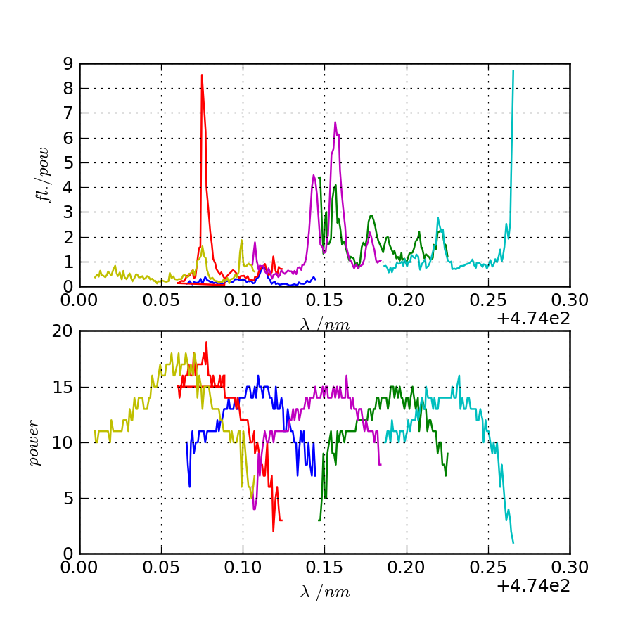

Research notes: May 2013
Table of Contents
Friday 31st
N2 Photionisation
11:55 Failed aligning/optimisation Log
After changing the dye yesterday I found I could not reoptimise the laser to give a decent power at the output. I've asked Jack for advice and help, but we didn't manage anything. Now Matthias is having a look.
I will try and plot some of the data I managed to get on Wednesday (hopefully not too much of it was overwritten).
15:25 Spectrum analysis Data
I've analysed the data taken on Wednesday the 29th (11:49 Spectrum-like features observered, need confirmation).
The data itself can be found at this link: ~/Documents/logs/2013/05/N2PI/29-05-13
Where the datasets that are junk have been marked with an underscore (e.g. "N2scan10.txt_"). These are typically scans that I accidentally overwrote with power calibration data.

Spectrum of N2 photoionisation, and power of the laser as the scan was being taken. The final `peak' is, I believe, just an artifact of the power drop seen in the final scan.
The figure above shows all of the individual spectra stitched into one plot. As far as I recall the final scan I took was overwritten, but showed that there were essentially no peaks beyond the farthest right ones shown. Matthias also thinks that there are no peaks beyond the far left, so we have the entire spectrum range here.
Care must be taken when looking at this data, to understand the fluorescence is normalised with the power reading (shown on the bottom graph). This seems to work well for the most part, but when the power gets very low we see what appear to be `fake peaks' like the one clearly visible at the end of the far right scan (I'm not 100% sure, but I think one of the scans that I lost indicate there was no real peak here). I suspect that there might be something like this going on at the end of the black coloured scan and the beginning of the yellow scan, but it's not entirely clear whether there really is some peak there as well, given the surrounding data-points.
There is an inconsistency in the background rates for the first four scans and the rest, and my notes indicate that I changed the threshold voltage for the discriminator at this point, which would explain that nicely.
Hanle dip simulation
11:56 Revisiting simulation for the experiment/paper Log
Matthias has also asked me to revisit some of the simulations done for the Hanle dip/magnetic field gradient experiment.
Specifically he'd like to me to produce a plot of how fluorescence changes for varying magnetic fields, with different polarisations of cooling and repumper. This would allow us to map what we've seen in the experiment to a magnetic field, in case we were to write a paper on the experiment.
He'd also like a sanity-check for the experiment, which is to check that as the B-field increases, the sensitivity of the fluorescence to B-field modulation should decrease.
The last thing is that he wanted to me to take another look at the B-field modulation frequency response drop-off. In the experiment we were seeing a fast dropoff of the fluorescence modulation response, whereas in the simulation I found that it was only dropping off at around the frequency of the spontaneous emission. One suspicion is that this could have been for Rabi frequencies that matched the spontaneous emission rates, and that if they were lower, then the dropoff would follow the Rabi frequency instead of the spontaneous emission rates.
Thursday 30th
N2 Photoionisation
10:16 Partial spectra obtained, need more data Log
The spectrum-like features observed in the last entry are confirmed to be N2 photoionisation peaks. They follow Jack's previous spectra and have been reproducible.
The autotracker is not on, because it has not been reported to be working well, and would probably take more work than making small scans and setting the crystal angle manually each scan. I am taking small scans over 0.08 nm and recording the power of the laser alongside count-rates to make a compensated scan spectrum.
Before taking more scans though I need to change the dye in the laser and re-optimise for output power.
15:26 Dye mixing procedure Method
- Mixture: 0.4 g coumarin, 500 ml ethanol
- Stir and break apart clumps of coumarin
- Ultrasonic bath for 10-20 mins, until mixed
- Separate into two beakers, 2x250 ml
- Top one beaker up to 500 ml the other to 800 ml
- 500 ml goes into oscillator (RHS, smaller bottle)
- 800 ml goes into amplifier (LHS, larger bottle)
Wednesday 29th
N2 photionisation
09:51 No spectroscopic properties in the scatter Log
Half-expected: there are no spectroscopic properties in the scatter. Besides that, the signal immediately after the laser pulse looks like its overloading the c.tron, so I should probably not continue to pursue this course.
At the end of the day I tried letting the pressure of N2 in the chamber get up to atmosphere, in case that discharged or cleaned any of the surfaces that could have been messing things up. A quick test showed no signal on the c.tron, but further testing is required.
If that doesn't work, I wonder if its possible that the channeltron's electrode surfaces are contaminated, perhaps with pump oil? It's possible that this could reduce the signal that we see.
11:49 Spectrum-like features observered, need confirmation Log
Strong spectrum-like features can be observed if the c.tron voltage is turned up to its maximum (3 kV) and the discriminator is turned down low - This is because even at 3kV the c.tron pulses are indistinguishable, to the eye, from noise. This was something that had been misleading me up until now, as I thought that the c.tron just wasn't working.
Essentially the discriminator is triggering off of noise a lot of the time, but there are also large count-rate peaks that span three or four points of a spectrum to give us what look like strong ionisation peaks. The clearest peak seen had a count rate of 120 Hz on a background of around 10 Hz.
Tuesday 28th
N2 Photionisation
12:02 More/same channeltron problems Log
I appear to be seeing the same channeltron problems as I was seeing before (11:36 Channeltron woes to 09:20 No electronics problem). That time things seemed to magically fix themselves, but I'm not seeing any signal any more and its not magically fixing itself.
Again I can see ions behaving in the way we would expect with respect to the capacitor voltage, but only when I shine the laser deliberately so that it is hitting the side of the N2 enclosure. As soon as we have good clearance (reasonable energy throughput), there are zero counts on the c.tron (not even the expected background counts).
First thing in the morning I tried bringing the chamber up to 1E-3 mbar of N2, to see if that would discharge anything that had charged up and was disrupting the c.tron operation, but that didn't help at all.
N.B. I believe that these issues are very close to what Jack was seeing before he had to move on to fibre shooting. We're no closer to solving them at the moment I'm afraid.
Matthias made mention that at one point he had seen difficulty using that particular discriminator with the c.tron, and found that unplugging it allowed him to observer pulses on the c.tron. I have just tried that (replacing the disc. with a 50 ohm termination) and found no trace of a signal in the region of interest.
12:12 Scan with scatter? Log
I suppose that one thing we could do is to take a scan with the laser pointing towards the region where we do see counts on the channeltron from scattering off of the enclosure. Perhaps if we can see a spectroscopic signal from N2 over the noise, we can use that to get some signal optimisation going, and help us find our way towards a clean spectrum.
Friday 24th
N2 Photoionisation
09:54 Scanning fixed Log
Yesterday's scanning issues were eventually cured. In fact, the change in power was not due to a moving motor, and wasn't a changing power at all. Instead the vi that was averaging the power readings being received was buggy (beware of the labVIEW "elapsed time" express vi!). I fixed it, and now the power changes as we would expect it to.
Ready to take some scans, in principle.
Thursday 23rd
N2 Photionisation
09:20 No electronics problem Log
I don't think there's a problem with the electronics any more. I had unplugged the 50 ohm termination at some point and that was causing the noise spike from the laser trigger to extend over the time period where we expect to see the arrival of ions on the c.tron. The discriminator itself is 50 ohm, so the issue with that was not an issue, just it running properly - the reason I didn't recognise this is that I had no idea that the real c.tron triggers were so short, and difficult to see (~ns).
09:22 Scanning issues Log
I'm now trying to make spectra in the regions beyond where Jack's spectra finished. The auto-tracker that compensates the angle of incidence on the doubling crystal as the wavelength changes is apparently a little hard to deal with, if it's even working at all (see Jack's scan for power variations). Thus I'm looking to make a scan without using it at all. The idea is to set the tracker position so that the output power of the dye-laser is maximum at the centre of the scan, and then start a scan that goes from below that centre to above it.
Unfortunately the vi that sets the wavelength for the scan appears to mess up the position of the tracker at the beginning of the scan. The position of the tracker at the beginning of the scan depends on where it is initially pre-optimised to in a way that I can't work out. I'm currently in the process of working out how to use the vis that come from the company to change the wavelength, instead of the one in the scan vi built by Jack (who can't remember where he got the vi that changes the wavelength currently).
Wednesday 22nd
N2 Photoionisation
09:43 Electronics problem Log
Yesterday I opened the chamber to check for broken connections and found none. The chamber is closed again and appeared to be pumping down to a reasonable pressure again despite reusing the main gaskett and not baking (high E-7s after only a half-hour or so).
Testing the electronics again after pumping down however, I noticed that the channeltron does work as long as the power supply for the discriminator is turned off. Unfortunately this wasn't checked before, as I felt it would be enough just to unplug the output of the c.tron from the input of the discriminator. It seems as if, then, there is a problem perhaps with grounding of that supply. Perhaps testing power and ground connections is the best approach from here.
Tuesday 21st
N2 Photoionisation
11:36 Channeltron woes Log
I've spent the last day setting up the spectroscopy experiment, but just this morning found that the channeltron performance appears to be degrading very quickly.
Matthias originally told me that the c.tron runs at 2 kV. When I ran it at this voltage I saw no counts. Turning up the voltage to around 2.2 kV I saw some counts for a short time, before they were gone again. It seems that the threshold voltage for getting counts on the device is creeping up, with counts last seen at 2.5 kV. I don't want to keep tracking that in case I properly blow the system (I think the limit is 3 kV).
It might be a good idea, just as a test, to switch the polarity on the device and look for photoelectrons from the laser, since there will be a higher background signal in this situation.
The other, perhaps more sensible alternative is to introduce some N2 and have some ions, just to see if I'm just not seeing counts because the background is too low. Although actually… the count-rate from N2 ionisation is supposed to be quite low compared to the background ionisation events when the laser is turned on, and I've already tested with the laser turned on so I guess there's not really any point in that.
13:49 broken connection? Log
Matthias has suggested that a connection to the c.tron could be broken. If there was only a small breakage, then the c.tron could still be coupled capacitatively, which would explain why it works for just a short period of time. I've tested the voltage at the feedthrough and it seems fine. It's possible still that there is a broken connection inside the chamber however.
Monday 20th
N2 Photoionisation
09:43 Alignment Log
I got the dye laser up and running on Friday afternoon. I've installed a flipper mirror so that it can be used in Amy's setup when the time comes. This mean that I had to realign the laser through the chamber, and it now goes through losing half power (the same as when it was aligned through the chamber before, according to Matthias). When I finished up on Friday afternoon, there was 1.1 mJ coming out of the laser, and roughly 550 uJ after the PI chamber.
Next up is a quick scan with no N2.
Friday 17th
N2 Photionisation scan
13:26 Still haven't started Log
The setup is roughly optimised, according to Matthias. The autotracking needs to be set for whatever wavelength scan range we are working on, so this is something I need to speak with Jack about when it comes to actually making a scan.
Also, Matthias is fairly worried about there only being 1 mJ pulse energy despite his best efforts to optimise. The current thinking is that the beam shape is too bad. He has contacted Radiant Dyes (the company who made the laser), for advice and the possibility of a technician.
On top of power issues, a bad beamshape makes the auto-tracker not work very weel. Matthias' suggestion is that we just not use it, and make scans small enough that there is not a big loss of power. The power fluctuations we do see however, should be monitored and used to obtain a normalised ionisation spectrum.
Wednesday 15th
N2 Photionisation scan
13:38 Starting up Log
This is my new task for the mean-time. Matthias has replaced what might have been a faulty channeltron for detection, and optimised most of the dye laser setup. The autotracker still needs some work apparently, which I'll ask Jack about.
The current pulse energy in UV is 1 mJ and there's some losses after going through the N2 chamber, leaving us with 500 uJ.
State detection experiment planning
13:41 Points of consideration Log
We had a quick meeting this morning to discuss the points of the experiment that still need planning and preparation.
- Photoionisation appears to be working, but we would like confirmation of the frequency of the ground state photoionisation transition, which was just outside of the range of the only scan we took.
- N2+ spectroscopy (Will's experiment) looked fine, but might be able to be improved, since the frequency of the transition seen was around 100 GHz out from literature values. We could just increase our planned detuning to mitigate any issues with this, but Matthias has some plans for additions to the experiment that might fix this problem.
- The issue of the N2-Ca crystal configuration needs to be considered
carefully. If the `phonon-laser' trick we are considering works,
then it is not an issue, but I don't know if it will work. If it
doesn't, then we must make sure that the crystal is in the same
configuration every time the dipole force is applied so that a
change in dipole force phase does not destroy correlations in the
analysis. This requires that we track the position of the ions in
the two-ion string, and either force it to remain the same, or wait
til it reconfigures before applying another dipole force.
There's no way, with a two-ion string, to tell the difference between configurations with just the PMT and it seems unlikely that there will be room for a camera in the setup. One alternative is to use a three-ion string, with two calcium ions and one N2. This way the configurations have different secular frequencies, and thus a change in configuration could be detected.
The other alternative would be, using a two-ion string, to make sure that in either position the N2 ion would be at the antinode of the dipole force. It's worth thinking about how we could do that practically, I think.
- The pulse laser and the pulse valve need to be synchronised. he
problem here being that the pulse laser does not output a
synchronising signal until it fires, and it does not fire at a
fixed interval after it has been told to (only at the next point
which matches with its internal 10 Hz trigger). This makes the
firing time difficult to predict, and since the pulse valve needs
to be opened at some time before the laser fires, so that
molecules have time to reach the trap, we have a synchronisation
issue.
Approach number one is to check if we can somehow access a signal from the laser's internal timer - it's not immediately accesible according to Matthias, but he hasn't checked thoroughly.
Approach number two is to have two pulsed from the laser per pulse from the valve - one before, to give us the timing, and one after which ionises the released molecules.
Monday 13th
Beamline testing
11:04 Remade prechamber measurements Data
Previous measurements: January Today's measurements: Testing how much N2 pressure we can get into the prechamber before the load on the backing pump starts to affect the pressure in the second chamber (measured by the ion pump current).
| Pb /mbar | P1 /mbar | I2 /uA |
|---|---|---|
| 6.5E-2 | 1.2E-9 | 0 |
| 2.0E-1 | 1.3E-9 | 0 |
| 2.5E-1 | 1.6E-9 | 0 |
| 3.0E-1 | 2.6E-9 | 0 |
| 3.5E-1 | 5.0E-9 | 0.5 (N) |
N: Flashing between 0 and 1. These results are roughly in line with what we saw before. P1 pressure starts to rise early at around 3.0E-1 mbar backing pressure, and Ion pump current shortly after. Ion pump current is rising sooner than in previous experiments, but this is likely just because the pressure in that chamber is smaller than before and therefore we are more sensitive to changes.
The next measurements taken also agree with those found at the entry linked above. With the current sensitivity of pressure measurements in the second chamber, no change in pressure is detectable during pulsed mode, even at full opening of the valve. There is an increase in pressure in the first chamber of course, and so we do have a good chance of there being a proper N2 beamline. It's just going to take testing to tell whether it is dense enough in this configuration. The numbers are in the entry of my notebook for today.
12:15 Next steps Log
The next step is to open up the gate-valve separating the beamline from the ion trap. We must wait for Amy to get micromotion compensation working again so that she can move on to the optics and trapping - We should only open the beamline to the trap shortly after confirming normal trapping.
Once they are open to each other and we have trapped, we should redo the measurements I've made above, looking again at what backing pressure starts to affect the pressures in the main chambers, specifically.
Then, once the optics for PI are aligned, we must work on the timing of the valve pulsing with respect to laser trigger. There is a delay circuit built in to the pulse generator, so we shouldn't have a lot of trouble with this stage.
Automation programming
16:24 In good shape Log
The server-client p7888 automation software is finally in good shape. Overall the redesign I had been exploring, featuring client-server synchronisation vis, turned out well after rooting out the standard first-deployment bugs.
So far this is only a test vi, but in fact it can be used to make any of the standard measurements we normally make, and can be extended/rewritten to do probably everything that we need for the real experiment.
Now that the guts should be more or less settled, I should write up documentation and labview help-files, so that people can build their own software with it.
I should also now speak with the others about laying down plans for the real experiment automation. Also, maybe some speed tests would be interesting.
Thursday 11th
Beamline testing
11:20 pulsing experiment Data
Pulsed testing the beamline. Same setup as previously (Wed. 8th): Backing line separated by precision leak-valve which is fully opened. N2 line separated by precision leak-valve which is opened minimally, such that the pressure reading on the backing line, which has a baseline of 1.0E-1 mbar with the N2 closed, now reads 1.5E-1 mbar.
The pulse width is 100 us and the rep. rate is set internally at 10 Hz (I think). We read the pulse-generator's monitor voltage (Vm) as we increase the pulse height, and monitor the pressure in the first chamber using the ion gauge (P1), and the second chamber using the ion pump current (I2).
| Vm /V | P1 /mbar | I2 /uA |
|---|---|---|
| 30 | 1.36E-9 | 1 |
| 165 | 1.36E-9 | 1 |
| 170 | 1.50E-9 | 1 |
| 175 | 1.95E-9 | 1 |
| 180 | 2.80e-9 | 1 |
| 185 | 4.9E-9 | 1 |
| 190 | 9.70E-9 | 1 |
| 195 | 1.72E-8 | 1 |
| 200 | 3.25E-8 | 1 |
| 205 | 6.90E-8 | 2 |
| 210 | 1.75E-7 | 4 |
This set of measurements seems reasonable. It shows that we can reach a regime where there is some measurable load on the ion pump, which should be a significant no of molecules. We have a long range below that as well, which might be what we want, if we have a high enough PI efficiency. The results don't quite match those of the same kind of test previously (January), but this is likely due to my having swapped around the precision valves which control the backing and N2 lines, which are a different model. It seems to me that the valve that now controls the backing line has a smaller maximum opening, resulting in a higher pressure in the prechamber and a higher pressure in chamber 1.
11:41 pressure buildup? Log
To avoid the effects of long term buildup of pressure in the second chamber, due to low pumping speed of the ion pump, I made sure to ramp down the valve voltage to close it after each reading - in order to give the ion pump enough time to completely pump out. Doing this, there didn't to actually be any long-term build up for any of the readings since the pressure returned almost instantaneously to the baseline. However this does not tell us that there is no buildup at all, since on the scale of the rep. rate (10 Hz) there could well be some uncleared molecules.
16:28 prechamber configuration Log
I've looked again at the notes of January to understand better the work that I did then. The conclusions I came to appear to be that the pressure in the second chamber (beamline) was too high without a prechamber, and too high with the precision leak-valve separating the prechamber from the backing line, since there is too small an aperture from the backing line to pump through.
When not using a precision leak valve, but a larger standard valve, the relative pressure in the prechamber is much smaller, and so is the pressure in the second chamber during pulsing. So small in fact that it was not measured by the ion gauge. We think that this might be okay, since we in theory only need a few molecules, but it would have been nice to hit the range in between this and the sans-prechamber configuration. Unfortunately we have no intermediate size valves to do this with.
Instead I think the best configuration to start with would be the one with the large standard valve. According to my measurements the optimal configuration is with that valve fully open, and the N2 leak-valve open so far as to load the backing pump up to around 0.5 mbar. This is the maximum prechamber pressure we can get in this configuration, before the load on the backing gets so high that the turbo begins to struggle, and the second chamber pressure begins to rise via that mechanism.
During tests, when the pulsed valve was held statically open with 160 mA current, the pressure in the second chamber under the above conditions was 7.5E-8 mbar (35 uA on ion pump). The baseline pressure (valve closed) was 1.3E-8 mbar (6 uA on ion pump). We should be able to calculate the flux of molecules from these numbers.
If it turns out that this configuration does not give us enough molecules at the target, then we can remove the prechamber and try again.
Friday 10th
Nvidia GPU programming training today
09:58 Follow-up Log
Follow-up e-mail from Thomas Nowotny (organiser):
"Hi all, thanks for coming along today and for the lively session. As promised, the pdfs of Jeremy's and Timothy's presentations are available here: http://www.sussex.ac.uk/Users/tn41/nVIDIA-presentations.zip
The material is also available on the hpc Wiki (thanks, Emyr): http://www.hpc.sussex.ac.uk
The Exercises are still available at http://www.sussex.ac.uk/Users/tn41/nVIDIA-Exercises.pdf http://www.sussex.ac.uk/Users/tn41/nVIDIA-Exercises.zip
Jeremy asked me whether he could have the list of the email addresses of attendants. Please let me know if you would not like me to pass yours on. He promised to not spam you but only use the addresses sparsely to inform you of similar events to today's. If I don't hear your objection I will send them to him Monday.
It is encouraging to see so much interest in GPU computing in Sussex and nearby … all the best for now, Thomas."
Wednesday 8th
Automation programming
10:20 Server-client model Log
I've built a generic p7888 client as described in the last entry of April's logs. There have been plenty of bugs and fixes since then, and it's still not in great working order yet, though I haven't tested the latest iteration. There's a real problem with latency over the datasocket and resultant synchronisation issues. For simple operations such as changing the settings, starting and halting the acquisition, I've managed to sort these issues out using vis that synchronise the client and server at the appropriate points, but for `live-feed' of acquisition status or data, I've not yet cracked a working version. Still, it's not required yet, so I can leave it as a work in progress. Ultimately I can still ditch the client-server architecture and have the whole thing running on the server if I want.
Beamline testing
10:35 Re-testing pulsing prechamber Log
Setting up the same beamline tests I went through in early January. Using a variable-pressure N2 chamber behind the pulse valve in order to control the amount of flow into the beamline and keep the pressure resulting from pulsing low.
11:13 Previous tests Log
From the notes of Characterise preliminary N2 chamber (3rd Jan `13), the procedure for testing was (from the relevant stage):
- Introduce N2 via the leak-valve with the pulse valve closed, making sure there is a constant flow of N2 through the valve and down the backing line. Pressure in this pre-chamber can then be adjusted via the leak valve or the close-off valve for the backing line.
- Open pulse-valve with a dc voltage to keep it open, and measure the pressure inside the beam-line at the second chamber. Adjust pressure inside the second chamber using leak valve. The measured pressure change can be used to estimate the flux of N2 in pulsed mode. Hopefully by that stage we will know a bit more about how much N2 flux is required at the trap for succesful photionisation.
Measurements were taken with an N2 regulator pressure of 1 bar, and a DC valve current of 160 mA (close enough to fully opened, which is at 230 ma, just prefer to use less current). Not sure what voltage that is, will check earlier notes in a second. -> Datasheet says 20 V.
11:41 Precision valve for the backing line Log
My notes indicate that the precision leak valve used for closing off the backing line may have been to small i.e. the prechamber pressure too high. I need to double check this result. The alternative is to use the main valve behind the belows, but I know that that is very large and opens quickly. Still, this would give us a lower pressure in the prechamber when opened.
16:15 Statically open pulsing valve Log
Preliminary tests with statically opened valve are complete. I need to check how similar they are to previous tests, because I don't remember this behaviour: The valve opens extremely quickly at around 160 mA (roughly 5V), up to a pressure of around 1E-5 mbar. This basically indicates a high pressure behind the valve, which is expected. In the very small range where we are still around 1E-8 mbar (up from 1E-9 mbar with the valve closed), there is no readable change in the ion pump current, which is the only measure of the pressure in the second chamber. This is a good confirmation of isolation between the two chambers.
Next tests will have to be with pulsing.
To do
Molecular Lab Experiments
HOLD Photoionisation of N2 Nic Amy
- HOLD Identify gnd-state transition
Jack has done most of the work here. Just a case of optimising power etc.
Jack has had to move on to fibre shooting after some trouble with getting a spectrum around the gnd-state transition. I'm going to take over generally, once Matthias has reoptimised the laser and finished baking the chamber (having just replaced the channeltron).
I managed to get a full spectrum on Wednesday and analyse it today. I think we've got the whole series of lines, and I've handed it over to Matthias to see if he can identify the ground state transition from it.
- DONE Install pump and pump down PI test chamber Nic
Installed and seems to be pumping down fine now with the turbo on.
- DONE Get a PI spectrum from the test chamber Jack Nic
[X]Try out the newly serviced laser. | Jack's tuned it up and producing a good amount of power 1 mJ (of 4 mJ new)
Jack's got a preliminary spectrum. Needs tuning.
DONE New tests on beamline
- DONE Pulsing redo pulsing tests
I need to redo the tests that were done early January on the beamline. That is, to test pulsing of N2 using variable pre-chamber pressures and to make sure that the resulting pressure is low and that we have a good range of control over it.
Redone, and all much the same as last time. Next up is to open the trap to the beamline and redo tests again.
- Open trap to beamline
Waiting on Amy to finish micromotion tests, then we open the gate valve separating the beamline from the trap.
HOLD Work on DACs for the new SCL Nic Kevin
- HOLD Building boards
- Matthias has the plans:
Pester him for them.
- Received:
Matthias sent them ages ago, but I didn't spot them in my mail. He's still yet to order the actual DACs though, so there's still time. I could make the boards however, in preparation.
- Matthias is making the boards:
Matthias is making the boards, I think it'll just be up to me to program the whole thing.
- Pins used:
Check with Matthias that his design has incorporated these pins as I/Os:
- Port D: RD8 (peak detect input), RD5 (CNinterrupt)
- U2RX pins, unless he's already designed these away
- HOLD Programming
- TODO Write SPI library for PIC comms with computer
- TODO Write SPI library for PIC comms with DAC
- TODO Write SPI library for PIC comms with computer
TODO Code an automation program for experiments Nic Kevin
- HOLD Plan out experiment process
Waiting on Keving to collect some data on `phonon-laser' type amplification of the dipole force before we can decide on the exact experimental procedure.
- TODO Fast autocorrelation calculation
[ ] Try using CUDA for a fast autocorrelation calculation |
Maybe first just try using Wolfgang's code. It might just be fast enough on its own.
- TODO Describe phonon laser trick in notes
Check if I already have.
- DONE Flow chart for experimental sequence
Gave this to Kevin a while back.
- DONE Fix datasocket bug
Debugged. Not a problem with the datasocket. Rather I was not resetting the function socket after it had been called, causing the program to constantly be calling functions, and this messed up the p7888 server.
- DONE Debug the rest of the program
Program debugged
- DONE Write data extraction vi
Look back at notes as to how this was done.
This was easy to write.
- DONE Debug
Most components work generally but synchronisation issues cause a problem running. Needs debugging.
Major debugging done, I'm sure more will turn up, but the test program is broadly functional. Next step is to make specific programs for the required tasks.
TODO Simulations Nic
- TODO Hanle dip/b-field map simulation
- TODO Fluorescence as a function of B-field for different light pol.
- TODO Sanity check: modulation sensitivity reduce at higher B-field?
- TODO B-field modulation frequency response (reduce laser Rabi f.)
- TODO Fluorescence as a function of B-field for different light pol.
- TODO Single ion `heat-engine' effect
Does the oscillation have something to do with a kind of `parametric' excitation from the laser pressure - Perhaps the ion only feels force from the laser when it is at the edges of its oscillation (no Doppler shift).
- HOLD One or two calcium ions
Although an extra ion will reduce the acceleration of the crystal due to the dipole force, is the increase in signal a good trade-off?
This question is not important if the `phonon-laser'-like approach we're going to try and take works well. This idea is on hold until more work is done there.
- CNCL 2-laser motional amplification for stable oscillation
This is being investigated experimentally. Won't need a simulation if it just works. Won't need a simulation if it doesn't.
- CNCL Adiabatic switching on/off of the cooling laser
Optimal parameters for adiabatic switching in order to avoid `kicking' the ions when switching between cooling and optical-dipole force and amplification periods. What is the typically used function?
This optimisation can be done experimentally, there's no need for a simulation really.
General
TODO Pseudopotential calculations for Oxford
HOLD Find submissions for ITCM-Sussex.com
Matthias has reminded us to look through the old website for these.
I should add a scanning cavity lock section to the "Technology" page of the site (extended abstract?).
Furthermore, I think it'd be nice to look over the diagrams that are on there already, and think about whether or not I could make some improved ones in POVRAY.
Rev. Sci. Instrum. 81, 075109 2010:
"We have implemented a compact setup for long-term laser frequency stabilization. Light from a stable reference laser and several slave lasers is coupled into a confocal Fabry–Pérot resonator. By stabilizing the position of the transmission peaks of the slave lasers relative to successive peaks of the master laser as the length of the cavity is scanned over one free spectral range, the long-term stability of the master laser is transferred to the slave lasers.
By using fast analog peak detection and low-latency microcontroller-based digital feedback, with a scanning frequency of 3 kHz, we obtain a feedback bandwidth of 380 Hz and a relative stability of better than 10 kHz at timescales longer than 1 s."
Current undergraduate/masters projects are focused on implementing our scanning cavity lock design with a cheap and feature-rich microcontroller from the dsPIC line (http://www.microchip.com/). Automated impulse-response-function analysis and digital filter generation will provide significant improvements to bandwidth and stability.
- Comments on current webpage:
- There are no sub-titles at the lowest level of the pages when looking at the research interests. e.g. "ion-photon entanglement" is a page inside "cavity-QED", but when you click on it it is title only "cavity-QED".
- Only "charge exchange reactions" in the molecular physics section. Should we show something about our research direction?
- Can we add references to our papers in the "crystal weighing" and "optical excitation" sections?
HOLD Ask Hiroki for a look at the code for cavity mode prop.
Asked Hiroki, but he hasn't finished it yet.
DONE Oxford group proposal research
-
- Drewsen group BBR assisted cooling
- Previous ammonia research
- Ammonia level structure for state-detection
-
- Drewsen and Schiller both have papers on BBR according to the proposal.
- Drewsen proposal uses Raman transitions, requiring narrow/stable lasers - does this apply to our system?
E-mail Brianna to assess the status of the Stark decelerator.
- General:
Look closer at the reactions that are proposed to investigate in the proposal, and make sure that there are going to be setups for those experiments, or ones to do with our research here, at Oxford.
- Reactions -> Deuterium fractionation:
Reactions involving H atom transfer to ionic species e.g.:
Ca^+ + HD0 -> CaH^+(CaD^+) + OD(H) Nd_3^+ + HDO -> ND_4^+(ND_3H^+) + OH(OD)
Addition reactions with H atom elimination (e.g. in proposal), and Near-thermoneutral charge transfer reactions (e.g. at link).
- Experimental:
In-situ measurement of masses and numbers of reactants and products -> Monitor sequential isotopic exchange.
Quantum-state selected reactants from stark decelerator (neutrals) and REMPI (ions). Thermal redistribution of ions monitored by non-destructive state-detection.
Control internal states using BBR assisted schemes (see nphys1604 and nphys1605).